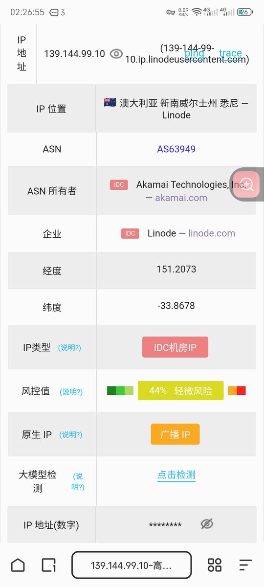
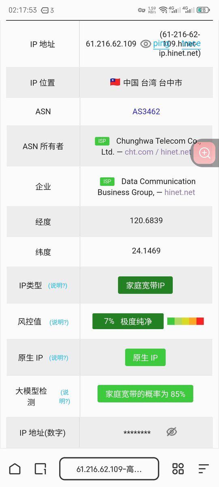

池鱼鱼🍥🏳️⚧️
@Chiyuyu520
@CHANGNIANX 长期固定使用哦，别乱切IP


Daisy柒
@CHANGNIANX
@Chiyuyu520 哇，刷到这个帖子前还真不知道这回事，只知道不能频繁切节点
刚刚在网站上测了一下，发现一直固定用的节点又是广播ip又是idc机房ip同时还高风险值
吓得我赶紧用排除法一个个试节点，结果很幸运的还真有很绿色的节点能用🤗 https://t.co/twqHSnJfYI